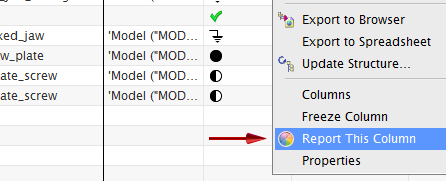
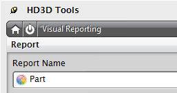

The interaction between the Visual Reporting tool and the Assembly Navigator has been enhanced in the following ways:
You can now create a visual report directly from the Assembly Navigator by right-clicking a column heading, that is a valid visual report property, and choosing the Report This Column command. This generates a visual report based on that column.

You can now configure an Assembly Navigator column with a part attribute. When you define a part attribute, a corresponding part attribute (work part) report is evaluated in the HD3D Visual Report dialog box.

The following Assembly Navigator columns have been added as properties to the Visual Report Definition dialog box:
Arrangements
Callout
Count
File Description
Layer
Out of Date
Product Interfaces
Shape
In Teamcenter mode, a new Reference-only column has been added to the Assembly Navigator under the Component Property source.
You can now see report results for color and tag components in the Assembly Navigator as soon as a report is generated. Previously, you had to first start the HD3D Visual Reporting tool or use quick report. You then had to return to the Assembly Navigator in order to see the component, its report group, and report property.
|
Application |
Modeling and Assemblies |
|
Assembly Navigator |
Right-click a column heading → Report This Column. |